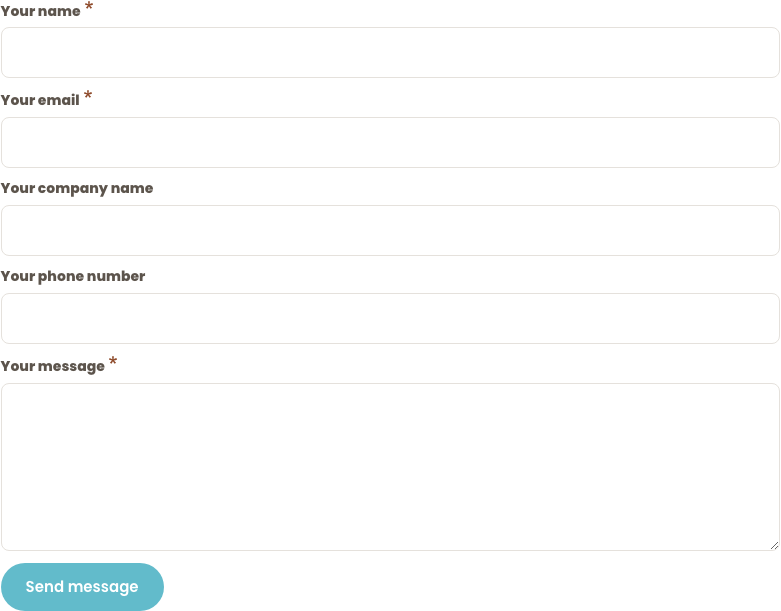
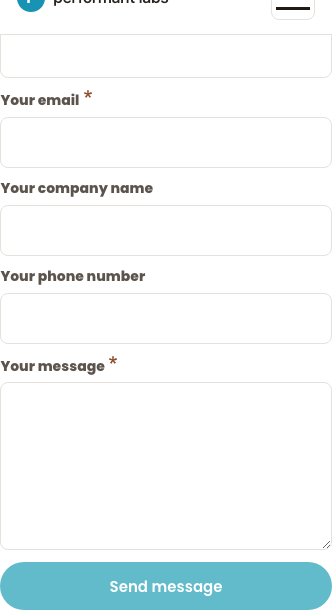

/contact-us form a11y batchPASS
autocomplete=...) which browsers don't paint, and the required-marker color (#8E4A2A terracotta asterisk) was already rendering correctly on live before this branch.color, but Dripyard paints the asterisk via background-color on a mask-image pseudo). Confirmed visually correct now and previously.| Element name | HTML tag | type | autocomplete (live) | Expected | Match |
|---|---|---|---|---|---|
| name | input | text | name | name | YES |
| input | email | email | YES | ||
| company_name | input | text | organization | organization | YES |
| phone_number | input | tel | tel | tel | YES |
| message | textarea | — | (none) | (none — free text) | YES |
| url (honeypot) | input | text | off | off | YES |
Same result at both viewports. Raw output in screenshots/sprint-16-cycle-2/probe-results.json.
::after)| Label | background-color | color | Visually rendered |
|---|---|---|---|
| "Your name" | rgb(142,74,42) | rgb(92,84,76) | terracotta (#8E4A2A) |
| "Your email" | rgb(142,74,42) | rgb(92,84,76) | terracotta |
| "Your message" | rgb(142,74,42) | rgb(92,84,76) | terracotta |
The visible asterisk color is set via background-color through a mask-image; color never reaches the screen. Existing webform.css L5 override (lines 125-128) was already producing the correct token. No code change made for F-NEW-16-C.
Contrast: #8E4A2A on #FFFFFF = 6.64:1 — passes WCAG 1.4.11 (3:1 non-text) and AA 4.5:1 body floor.


The hook_form_alter() function was restructured from early-return to conditional-block to accommodate both the articles exposed form and the contact webform. S re-verified:
GET /articles → HTTP 200<form id="views-exposed-form-articles-page-1"> wrapper is correctly stripped (Phase 3 behavior preserved — $form['#theme_wrappers'] = [] still fires).| Finding | Cycle 1 | Cycle 2 |
|---|---|---|
| F-NEW-16-B autocomplete tokens (WCAG 1.3.5) | FAIL (regression) | CLOSED |
| F-NEW-16-C required-marker color | FAIL (audit probe error) | CLOSED (no-op verified) |
| F-NEW-16-A sidebar H2 size | Open | Open — deferred to Cycle 3 |
| F-NEW-16-D sidebar card wrapper | Open | Open — deferred to Cycle 3 |
| F-NEW-16-E §C "What to expect" H2 | Open | Open — deferred to Cycle 3 |
| F-NEW-16-F §D primary CTA token | Open | Open — deferred to Cycle 3 |
| F-NEW-16-G CTA stacking | Open | Open — deferred to Cycle 3 |
Markdown handoff: sprint-16-cycle-2-S.md · T handoff: sprint-16-cycle-2-T.md · F handoff: sprint-16-cycle-2-F.md